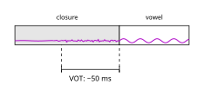
Voicing and Airstream
Voicing
Voicing
Previously:
Voicing
Voicing requires a pressure differential.
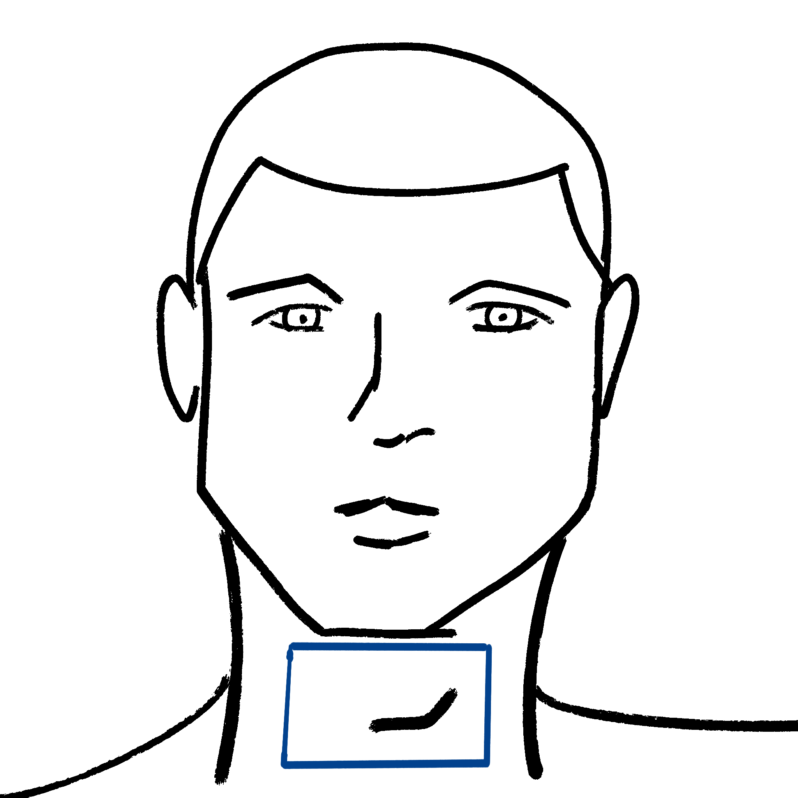
voicing possible
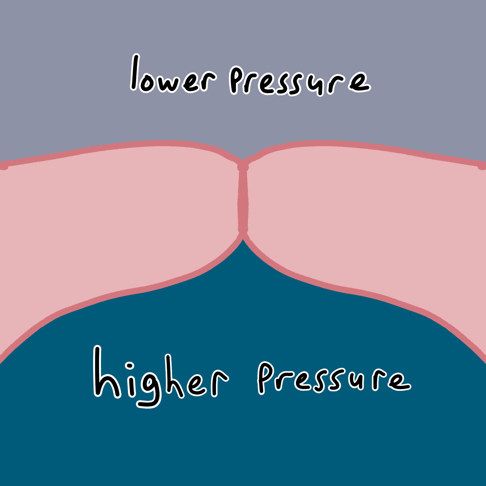
voicing not possible
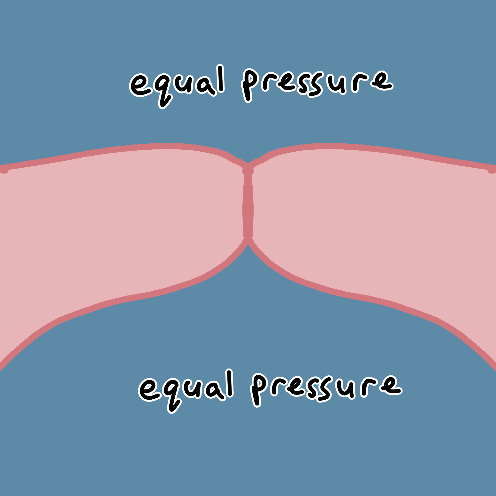
Voicing
No problem for sounds with incomplete closure.
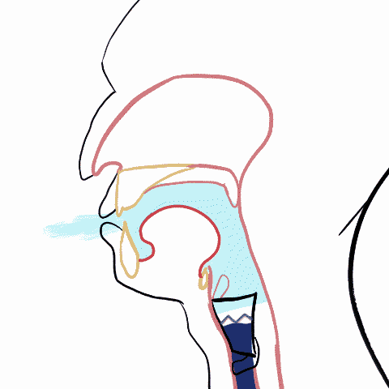
Voicing
With complete closure, air pressure equalizes.
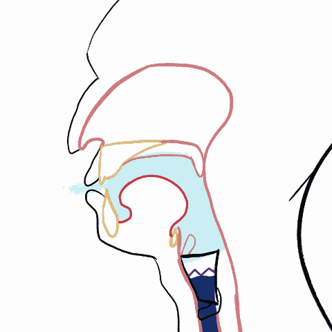
Voice Onset Time
Pulmonic Stops
| Pulmonic | Egressive | Stop |
| “Air pressure from lungs” | “outward airflow” | “full closure” |
Pulmonic Stops
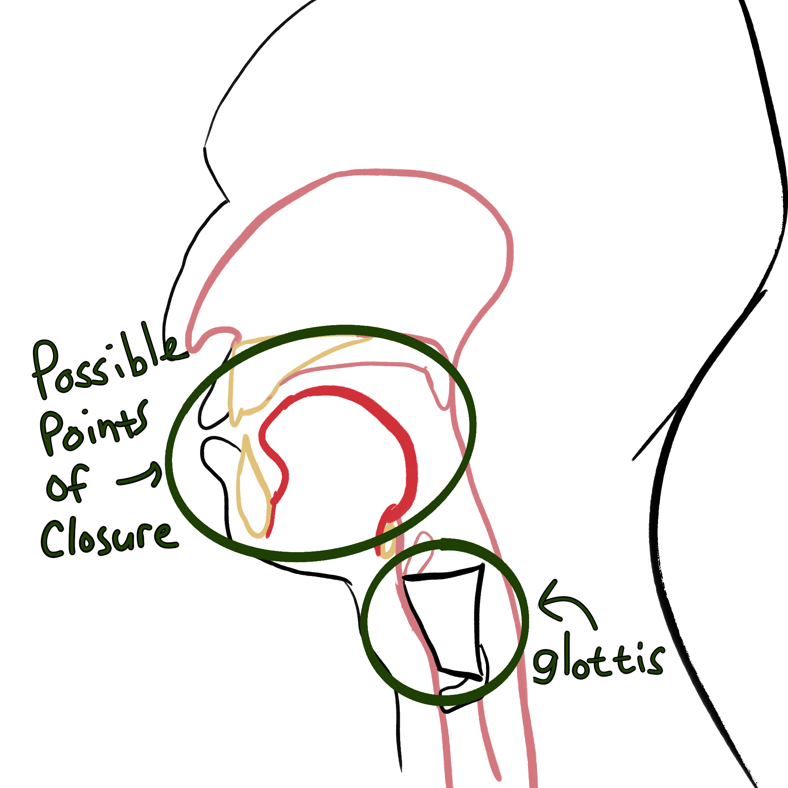
Pulmonic Stops
The articulators involved with making stops don’t spatially interfere with the glottis.
How might constrictions and the glottis interact temporally?
Fully Voiced Stops

Fully Voiced Stops
Also known as “negative voice onset time”
Short Lag Voice Onset Time
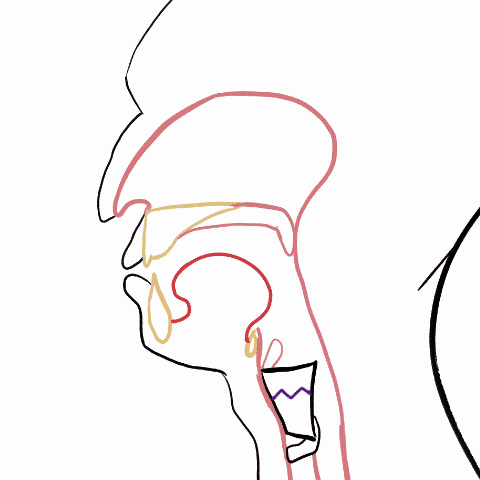
Short Lag Voice Onset Time
There is a brief lag between releasing the closure and the onset of voicing.
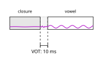
Long Lag Voice Onset Time
Short Lag Voice Onset Time
There is a long lag between releasing the closure and the onset of voicing.
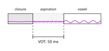
Voice Onset Time
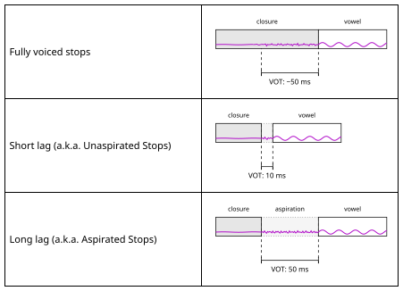
Voice Onset Time
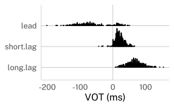
Chodroff et al. (2019)
Transcribing different VOTs
| VOT | IPA |
|---|---|
| fully voiced | [b] |
| short lag | ? |
| long lag | [pʰ] |
Transcribing VOTs
| fully voiced | short lag | long lag | |
|---|---|---|---|
| English, German | [b d g] | [pʰ tʰ kʰ] | |
| Cantonese | [p t k] | [pʰ tʰ kʰ] | |
| Spanish, Dutch, Hungarian | [b d g] | [p t k] | |
| Eastern Armenian, Thai | [b d g] | [p t k] | [pʰ tʰ kʰ] |
Lisker and Abramson (1964)
Transcribing VOT
Lesson: A lot of transcription is analysis in disguise!
Non-Pulmonic Stops
Non-Pulmonic Stops
| egressive (+ air pressure) | ingressive (- air pressure) | |
|---|---|---|
| glottalic (closure at the glottis) | “ejectives” | “implosives” |
| velaric (closure at the velum) | “clicks” |
Ejectives
- An oral closure is made.
- The glottis is tightly closed.
- The larynx is raised.
- Pressure builds behind the oral closure.
- The oral closure is released.
- The built up pressure rushes out.
Ejectives
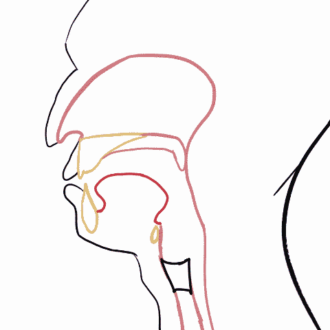
Ejectives
You can have an ejective at any point of closure, and it’s transcribed with [’] (a regular apostrophe)
| bilabial | alveolar | retroflex | palatal | velar | uvular |
|---|---|---|---|---|---|
| [p’] | [t’] | [ʈ’] | [c’] | [k’] | [q’] |
Ejective fricatives and affricates are also possible.
Practicing Ejectives
Try holding your breath (thus closing your glottis) and articulating “t t t t” repeatedly.
Implosives
- An oral closure is made.
- The glottis is tightly closed.
- The larynx lowers.
- Pressure drops behind the oral closure.
- The oral closure is released.
- Air rushes in, normalizing the low pressure.
Implosives
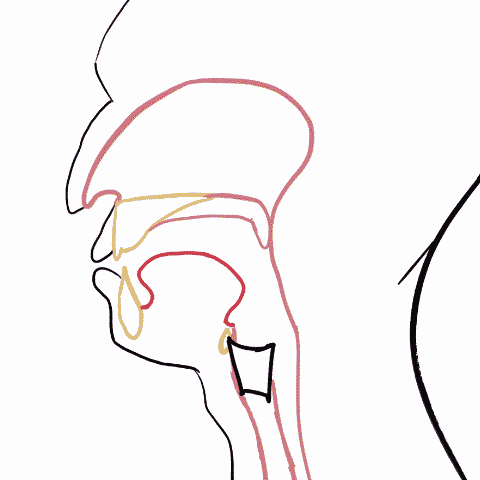
Implosives
Implosives can be made at any point of closure, and their IPA symbols tend to have a little hooktop.
| bilabial | alveolar | velar | uvular |
|---|---|---|---|
| [ɓ] | [ɗ] | [ɠ] | [ʛ] |
Clicks
- A closure is made somewhere in front of the velum.
- While that closure is maintained, the tongue body moves back.
- A vacuum is created between the point of closure and the velum.
- The closure is released.
- Air rushes in normalizing air pressure.
Clicks
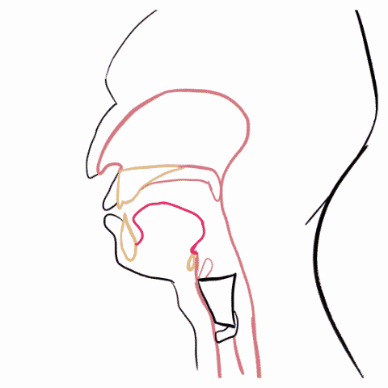
Clicks
You can only have clicks with active articulators that don’t interfere with the tongue body.
| bilabial | dental | palatal | lateral | post-alveolar |
|---|---|---|---|---|
| [ʘ] | [ǀ] | [ǂ] | [ǁ] | [ǃ] |
Clicks In Xhosa [ǁoːsa]
Chodroff, Eleanor, Alessandra Golden, and Colin Wilson. 2019. “Covariation of Stop Voice Onset Time Across Languages: Evidence for a Universal Constraint on Phonetic Realization.” The Journal of the Acoustical Society of America 145 (1): EL109–15. https://doi.org/10.1121/1.5088035.
Lisker, Leigh, and Arthur S. Abramson. 1964. “A Cross-Language Study of Voicing in Initial Stops: Acoustical Measurements.” WORD 20 (3): 384–422. https://doi.org/10.1080/00437956.1964.11659830.